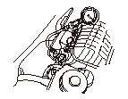

シリンダ ヘッド圧縮圧力の点検
•
この作業を行っているときにテンポラリDTCまたはDTCが表示された場合は、テンポラリDTCまたはDTCを確認し、必要であれば消去する。
•
点検終了後、
Hondaダイアグノスティック システム（HDS）でPGM-FI ECUをリセットし
、インジェクタ全気筒停止機能を解除する。
ラジエータ ファンが2回作動するまでエンジンを暖機する。
暖機後エンジンを停止する。
データ リンク カプラにHDSを接続する。
イグニッション スイッチをON
（II）
にする。
HDSが車両およびPGM-FI ECUと通信することを確認する。
通信しない場合は、データ リンク回路を点検する。
HDSのインスペクション メニューからインジェクタ全気筒停止機能を選択する。
イグニッション コイル4本を外す。
スパーク プラグ4本を外す。
プラグ穴にコンプレッション ゲージのアタッチメントを挿入する。
スロットルを全開にして、スタータ モータでエンジンを回し全気筒の圧縮圧力を測定する。
完全充電させたバッテリを使用し、できるだけ短時間で測定を行うこと。
測定は1気筒ごとに行う。
圧縮圧力
限度値:
980kPA(10.0kgf/cm
2
)
各シリンダ間差:
200kPa(2.0kgf/cm
2
)
•
圧縮圧力が低い場合は、次の項目を点検し、正常な状態で再測定する。
-
バルブの圧縮漏れ
-
シリンダ ヘッド ガスケットの破損
-
ピストン リングの摩耗
-
ピストン、シリンダの摩耗
•
圧縮圧力が高い場合は、次の項目を点検し、正常な状態で再測定する。
-
ピストン ヘッド、シリンダ ヘッドのカーボン堆積
HDSでPGM-FI ECUをリセットし
、インジェクタ全気筒停止機能を解除する。
点検後、取外した各部を取付ける。
